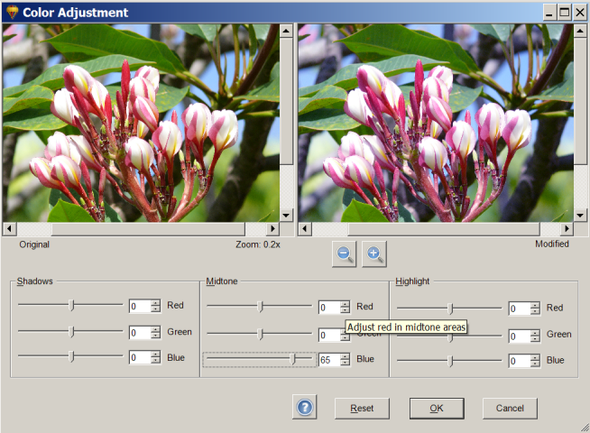

Color Adjustment under the Color menu can be used to adjust the red, green, and blue
intensities in a photo. To adjust the color, move the slider for that color or enter a value from -100
to 100.
You can adjust the color settings for the shadow, midtone, and highlights of a photo. The midtone
setting can be used to affect the overall color, with little or no change in the shadows and
highlights. This often preserves a realistic look in the bright and dark areas of the photo.
